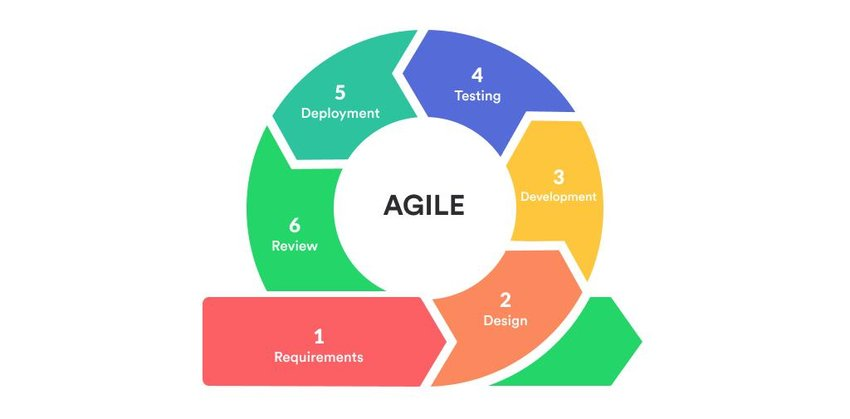
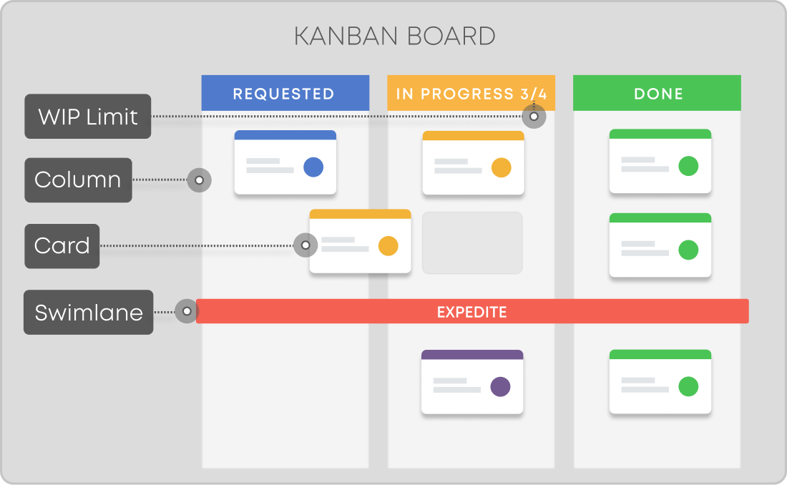

Adaptive planning, early delivery, and continuous improvement for modern software development.
Agile is a set of principles for software development under which requirements and solutions evolve through the collaborative effort of self-organizing and cross-functional teams. It promotes adaptive planning, evolutionary development, early delivery, continuous improvement, and encourages flexible responses to change.
Represents the customer and ensures the team is working on the right things from a business perspective.
Ensures the team follows Agile practices and removes any obstacles to the team's progress.
A self-organizing, cross-functional team that delivers the product increment.
Scrum helps teams work together, encouraging them to learn through experiences, self-organize, and continuously improve.
A time-boxed period to complete specific work ready for review.
Short daily meetings to discuss progress and plan for the day.
A meeting to inspect the increment and adapt the product backlog if needed.
A meeting at the end of each sprint to reflect on the process and improve.
Kanban focuses on continuous delivery, reducing bottlenecks, and visualizing the workflow.
A visual tool to show work in various stages, like 'To Do', 'In Progress', and 'Done'.
Limits set to prevent bottlenecks by restricting work in progress.
Frequently delivering working software in small increments.
The time taken from the start to the completion of a task.